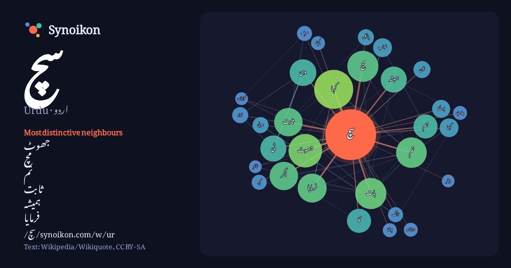

اردو · Urdu · popular word
سچ
“truth” · The words found around it in 671 instances from Urdu Wikipedia, Wikiquote.

Most distinctive neighbours
- جھوٹ 32×
- مچ 29×
- تم 17×
- ثابت 14×
- ہمیشہ 13×
- فرمایا 13×
- وی 12×
- کہتا 10×
- ٹی 9.9×
- خواب 9.5×
- بات 9.4×
- جرنی 8.9×
- بولنے 8.8×
- اگر 8.3×
- کہا 7.9×
- لانگ 7.6×
- نیوز 7.4×
- یقین 7.2×
- بولنا 6.9×
- حرف 6.8×
× = how many times more often than in general Urdu Wikipedia text.
Most frequent neighbours
- میں 141
- کا 104
- نے 95
- سے 77
- اس 68
- کو 67
- جو 49
- وہ 49
- کہا 47
- نہیں 45
- تھا 41
- کر 40
- کیا 37
- بھی 35
- جھوٹ 35
- بات 30
- مچ 30
- تم 29
- ان 27
- فرمایا 26
In context
- روزنامہ سچ ایک سندھی زبان کا اخبار ہے۔ Wikipedia snippets · روزنامہ سچ
- دکھائے جائیں کیونکہ سچ وہی ہے جو خود بولے اور نظر آئے۔۔۔۔ آج کا سچ سچ ٹائمز سچ بات سچ سویرا ہم سب کا پاکستان صحت زندگی چوپال سچ تی وی کی سیٹلائٹ فریکوئنسی Wikipedia snippets · سچ ٹی وی
- ڈیلی سچ بھارت کے زیر انتظام علاقہ جموں سے چھپنے والا اردو اخبار ہے۔ اس کے بانی راجا محمد اکبر خان تھے۔ یہ اخبار 1940 میں جاری ہوا۔ یہ اخبار بھارت کی تحریک Wikipedia snippets · ڈیلی سچ
- کسی بھی بات یا کام کا واقع اور حقیقت کے مطابق ہونا سچائی ، سچ یا صدق کہلاتا ہے مثال کے طور آپ کسی کو بتاتے ہیں کہ ہمارے گھر کے سامنے ایک پارک ہے اور وہ Wikipedia snippets · سچائی
- موٹر سچ پی جے ایس سی (انگریزی:Motor Sich PJSC ) یوکرین کی ہوائی کمپنی ہے ۔ موٹر سچ پی جے ایس سی کا مرکزی دفتر یوکرین کے ائیر پورٹ Boryspil International Wikipedia snippets · موٹر سچ پی جے ایس سی
- ٹرتھ ازم جسے اردو میں سچ پسندی کہتے ہیں، ایک ویب گاہ ہے، جسے سچائی پسند تحریک نے بنایا ہے، جو پاکستان کی ایک سیاسی جماعت ہے۔ ' {{{مضمون کا متن}}} یہ ایک Wikipedia snippets · سچ پسندی
- پیٹر مارک سچ (پیدائش:12 جون 1964ء) ایک انگریز کرکٹ کھلاڑی ، کرکٹ کوچ اور میچ ریفری ہے۔ ایک آف اسپنر ، ایسے کو 1993ء میں جان ایمبرے کے متبادل کے طور پر Wikipedia snippets · پیٹر سچ
- گیریژن سچ (انگریزی: Garrison True) ایک اداکار ہیں جن کا تعلق ریاستہائے متحدہ امریکا سے ہے۔ ^ ا ب ربط: https://www.imdb.com/name/nm0874081/ انگریزی ویکیپیڈیا Wikipedia snippets · گیریژن سچ
More Urdu words
Precomputed on 2026-10-09 with default settings (±5 words, medium corpus). The interactive map can refresh it with live data.